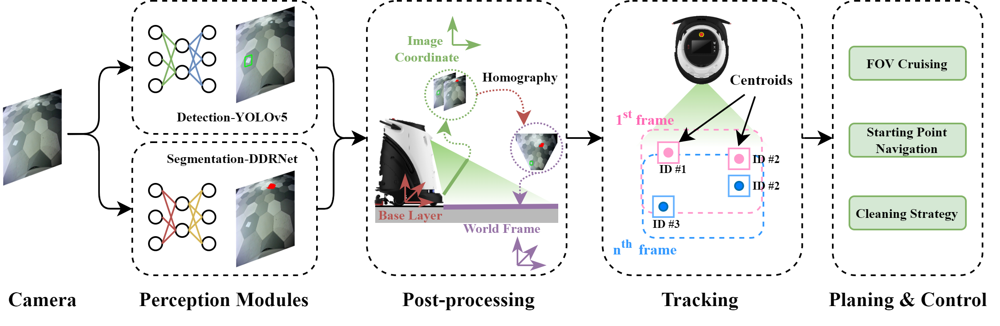

Gaussian Robotics
* denotes equal contribution
Cleaning public areas like commercial complexes is challenging due to their sophisticated surroundings and the vast kinds of real-life dirt. Robots are required to distinguish dirts and apply corresponding cleaning strategies. In this work, we proposed an active-cleaning framework by utilizing deep-learning methods for both solid wastes detection and liquid stains segmentation. Our system consists of 4 components: a Perception module integrated with deep-learning models, a Post-processing module for projection, a Tracking module for map localization, and a Planning and Control module for cleaning strategies. Compared with classic approaches, our vision-based system significantly improves cleaning efficiency. Besides, we released the largest real-world indoor hybrid dirt cleaning dataset (HD10K) containing 10K labeled images, together with a track-level evaluation metric for better cleaning performance measurement. The proposed deep-learning based system is verified with extensive experiments on our dataset, and deployed to Gaussian Robotics's robots operating globally.
HD10K is the largest indoor real-life dirt dataset to date for cleaning robotics. Common dirt in shopping malls such as flyers/ tickets, and coffee/tea stains are targeted as solid wastes and liquid stains correspondingly. To ensure the variety of our data, we collected our dataset in 3 different Chinese cities. We use our robot's front RGB camera to record the data, during collection, dirt are randomly placed on the floor mimicking the real-life scenes and the robot was manually pushed using random routines. The collected data are in the form of video sequences in 10FPS; key-frames are extracted for annotation by thresholding frame similarity at 2Hz. Bounding boxes and segmentation masks are applied accordingly for solid wastes and liquid stains. Only key-frames are labeled for training data while the entire sequence is labeled for testing data.
This website is inspired by the template of Michaël Gharbi.